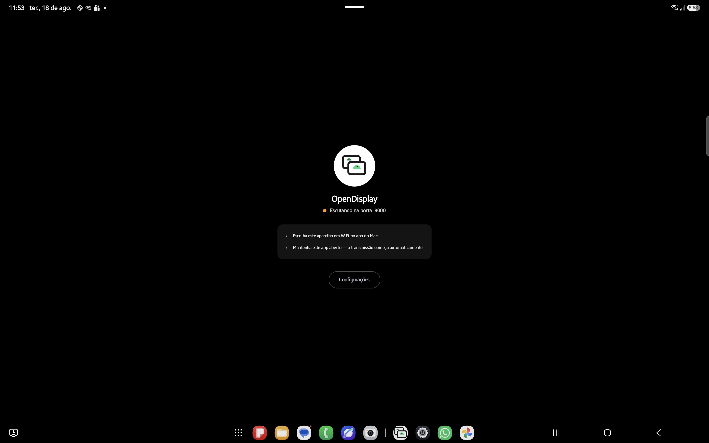
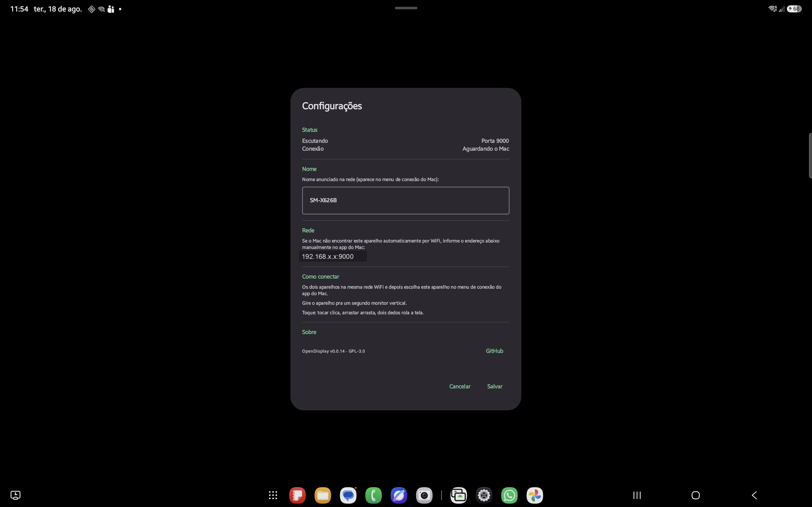
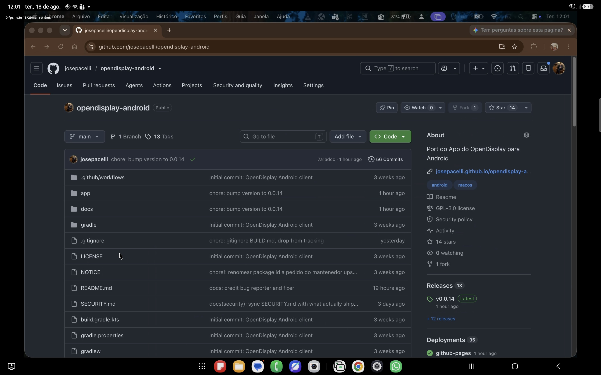

Use your Android tablet or phone as a real second monitor for your Mac.
An unofficial, open-source Android client for OpenDisplay — the original project only ships an iOS/iPadOS client. This one speaks the same network protocol, with no changes required on the Mac app. A free alternative to Duet Display, Sidecar and Spacedesk for anyone who already owns an Android tablet and wants an extended display, not just mirroring.
How it works
The Mac stays untouched. The Android device does the listening.
The Android device listens and the Mac connects — that's what lets it work over WiFi with zero manual setup, via mDNS discovery, without a single change to the original OpenDisplay Mac app.
MAC (server, original OpenDisplay app)
- CGVirtualDisplay
- → ScreenCaptureKit → VideoToolbox H.264
- → TCP [4-byte length][Annex-B frame] ═══→
- ← control JSON (hello, touch, scroll, ping) ═══
ANDROID (this project)
- listens on :9000
- → MediaCodec → SurfaceView
Screenshots
Real hardware, real WiFi connection.
No staged mockups — every shot below is a live session between an Android tablet and a Mac.





Installation
Two apps that work together.
Install both to get going — the Mac side is the original OpenDisplay project, unmodified.
The sender
Captures a virtual display and streams it. It's the original OpenDisplay program, unmodified.
Download for MacPrefer to build it yourself? Build from source ↗
The receiver
Displays the stream and sends touch/scroll back.
Download APK (v0.0.33)Google Play version is in closed testing — want in? Email josepacelli@gmail.com. Meanwhile, sideload the APK above, or build it from source ↗. Browse older releases ↗
Features
What already works today.
Validated against the real Mac app, not a spec sheet.
Hardware H.264 video
MediaCodec decoding straight to a Surface, no CPU conversion.
Automatic discovery
mDNS (_opensidecar._tcp) — the Mac finds the Android device on its own on the same network.
Touch and scroll
One finger becomes a click/drag, two fingers become scroll.
Pinch to zoom
Two fingers spread on the video zoom in locally, on either Mirror or Extend mode — no protocol change needed, and touch still lands on the right spot on the Mac. Once zoomed, drag with three fingers to move around the magnified area.
Remote cursor
A dot or decoded sprite, mirroring the Mac's cursor position live.
Foreground service
Survives the app going to background and resumes correctly after unlocking the screen.
Error recovery
Decoder errors trigger an automatic keyframe request, without dropping the connection.
Manual fallback
Editable mDNS name and IP:port connection for when automatic discovery fails.
USB accessory (AOA)
Plug the cable, tap the system's prompt, done — no adb, no developer options.
Picture-in-Picture
Leave the app while connected and the video keeps playing in a floating window.
No account, no telemetry
Same philosophy as the original project: no central server, nothing phoned home.
Compare
Against the best-known alternatives.
For using an Android tablet as an external monitor.
| OpenDisplay Android | Duet Display | Spacedesk | |
|---|---|---|---|
| Price | Free | Paid | Free (core) |
| Open source | GPL-3.0 | No | No |
| Account required | No | Yes | No |
| Same protocol as OpenDisplay Mac | Yes | No | No |
| Central server | None | Yes | No |
FAQ
Common questions.
Is this the same app as OpenDisplay for iOS?
No. It's an independent client, written from scratch in Kotlin, that implements the same network protocol to interoperate with the original Mac app. The official project only ships an iOS/iPadOS client.
Is it on Google Play?
The Google Play version is currently in closed testing. Want in as a tester? Email
josepacelli@gmail.com. Meanwhile, it's also
distributed via GitHub Releases — install it with adb install or by copying
the APK to the device (enable "unknown sources").
Does it need WiFi?
It works over WiFi with automatic mDNS discovery. You can also connect over USB as a
native accessory (AOA) — plug the cable and tap the system's prompt, no adb
required. See the repository for a fallback covering Mac apps without AOA support yet.
Does it work on any Android tablet or phone?
Requires Android 8.0 (API 26) or higher. Tested on real hardware (Samsung Galaxy Tab S9 FE+ and Galaxy Note10+/Tab S7+, Android 12 through 16), but not yet across a wide range of devices — touch/scroll/cursor are implemented but with limited field validation so far. Note: v0.0.7 and earlier crash on launch on Android 12–13 (API 30-33); use v0.0.8 or newer (fixed in #5).
Does it change anything on the Mac app?
No modification whatsoever — any protocol mismatch is this project's responsibility, not upstream's.
What's the license?
GPL-3.0, same as the original project. Open source, free to use including commercially; distributed modified versions must remain open source under the same license.
Contribute
Issues and pull requests welcome.
Bug reports and PRs go on the GitHub repository, which also has the architecture, protocol and build details. Careful bug reports are what actually make a one-person side project better — thanks to everyone below.

@gaeaearth — this project's most active early tester: the Android 12/13 launch crash (#4), the screen-timeout/reconnect issues (#10, also the idle-screen fix in #28), and the misleading manual-connection hint (#18).

@edoardomich — fixed the Android 12/13 launch crash (#5).

@jpbhdrey — built the USB accessory (AOA) transport
(#33): plug the
cable, tap the system's prompt, done, no developer options or adb dance required.

If OpenDisplay Android saved you a monitor, consider buying me a coffee.
This is a one-person side project, built and maintained by me, Jose Pacelli, evenings and weekends — not a company.
Supporting me on Ko-fi keeps this project maintained and free for everyone, including people who can't afford to chip in. My goal is to make this the best free way to turn a spare Android tablet into a real second monitor.
If it saved you from buying a monitor, a small tip helps keep it going. Thank you.